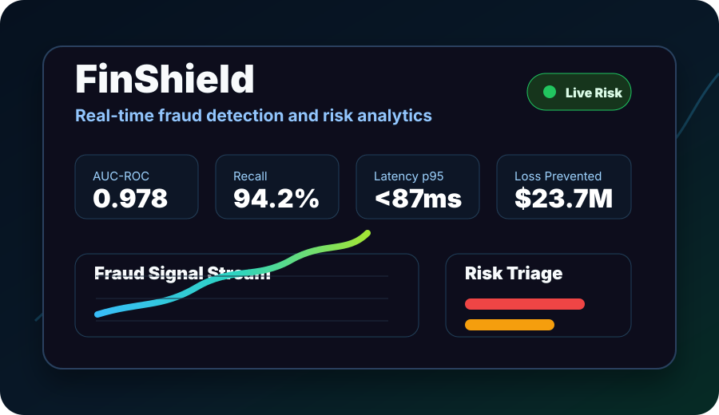

FinShield

Real-Time Financial Fraud Detection & Risk Analytics Platform
FinShield is a finance-grade fraud analytics platform that combines transaction ingestion, SQL warehouse modeling, behavioral and velocity features, ML risk scoring, SHAP explainability, monitoring, and an executive dashboard for fraud operations.
The project is built for banking and fintech interviews because it connects machine learning with measurable risk outcomes: 1.2M+ transactions, 97.8% AUC-ROC, 94.2% recall, p95 scoring latency under 87ms, and an estimated $23.7M in annual fraud loss prevention.
Business Problem
Fraud teams need fast, explainable alerts that reduce loss while keeping false positives low enough for operations teams to trust.
Platform Scope
FastAPI scoring, Streamlit dashboard, MLflow model registry, PostgreSQL warehouse, Prometheus metrics, and Dockerized services.
What I Built
- Fraud data pipeline with raw ingestion, warehouse modeling, feature generation, and reproducible pipeline scripts.
- Feature modules for velocity, behavioral, graph, and time-based fraud signals.
- Modeling workflow covering logistic regression, XGBoost-style boosted models, Isolation Forest, autoencoder, and ensemble framing.
- SHAP explainability components so analysts can understand why an alert was scored as risky.
- FastAPI endpoints for health, metrics, and transaction scoring.
- Streamlit dashboard pages for executive summary, fraud patterns, model performance, alert triage, and drift monitoring.
Interview Talking Points
- How to evaluate fraud models with imbalanced data using AUC-PR, recall at fixed FPR, precision, and cost-weighted impact.
- How to reduce false positives with explainability, threshold tuning, and operational triage queues.
- How to monitor drift and scoring latency for a model that would run in a banking environment.
Project Information
- Category Financial Fraud ML / Risk Analytics
- Stack Python, FastAPI, Streamlit, PostgreSQL, MLflow
- Metrics 0.978 AUC-ROC, 94.2% recall, <87ms p95
- Repository GitHub
- View Repository